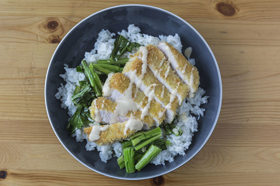

Pork Katsu with Sticky Rice

Description
This recipe is amazing for dinner or as a meal prep. The Wafu sauce can be kept in an airtight container in the refrigerator for several weeks.
The key to an even, golden crust is to use an oil with a high smoke point, like canola, and ensure you replenish the pan when the oil gets low.
Ingredients
- 300g Pork chops
- 20g Ginger
- 2 Garlic cloves
- 225g Yu choy
- 38g Panko
- 15ml Sesame oil
- 20g All-purpose flour
- 157.5g Calrose rice
- Wafu sauce
- High-smoke point oil (Avocado is not recommended, as it can turn the panko green)
- Salt & pepper to taste
- 1 Large egg
- In a medium pot, combine the rice, 1 ¾ cups of water and a big pinch of salt (double the water for 4 portions); bring to a boil.
Reduce the heat, cover and let simmer, 18 to 20 minutes, until the rice is tender and the water is absorbed. Remove from the heat
and let sit, covered, for 5 minutes. Fluff the cooked rice with a fork and set aside in a warm spot.
- While the rice cooks, cut off and discard the bottom ½ inch of the yu choy stems; cut the yu choy into 1-inch-long sections.
Peel and mince the ginger. Mince the garlic.
- Place the flour and breadcrumbs in two separate bowls; season each with S&P. Crack 1 egg into a third bowl (double the eggs for 4 portions)
and beat until smooth. Pat the pork dry with paper towel; season with S&P. Working one piece at a time, thoroughly coat the seasoned pork in
the flour (tapping off any excess), then in the beaten egg (letting the excess drip off), then in the breadcrumbs (pressing to adhere). Transfer to a plate.
- In a large pan (nonstick, if possible), heat a generous drizzle of oil on medium. Add the breaded pork to the pan and cook, 5 to 7 minutes per side, until golden
brown and cooked through; season with S&P. Transfer to a paper towel-lined plate. Set aside in a warm spot and reserve the pan.
- In the reserved pan, heat the sesame oil on medium. Add the garlic and ginger. Cook, stirring frequently, 30 seconds to 1 minute, until fragrant. Add the yu choy and cook,
stirring frequently, 3 to 4 minutes until wilted; season with S&P.
- Divide the finished rice, pork katsu and yu choy between your plates. Top the katsu with a drizzle of the wafu dressing. Bon appétit!
Home